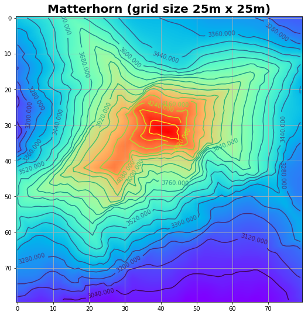
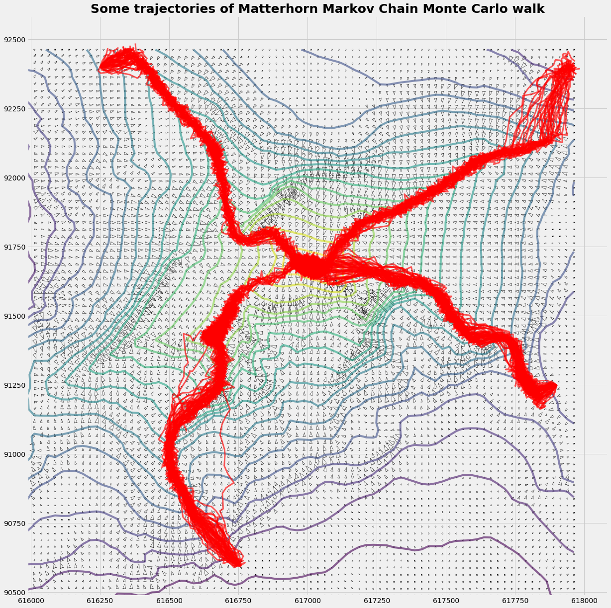
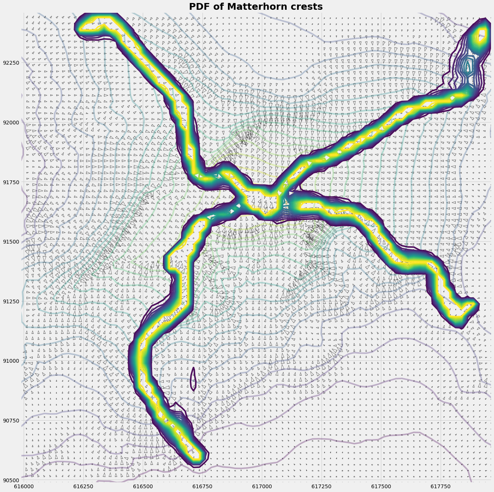
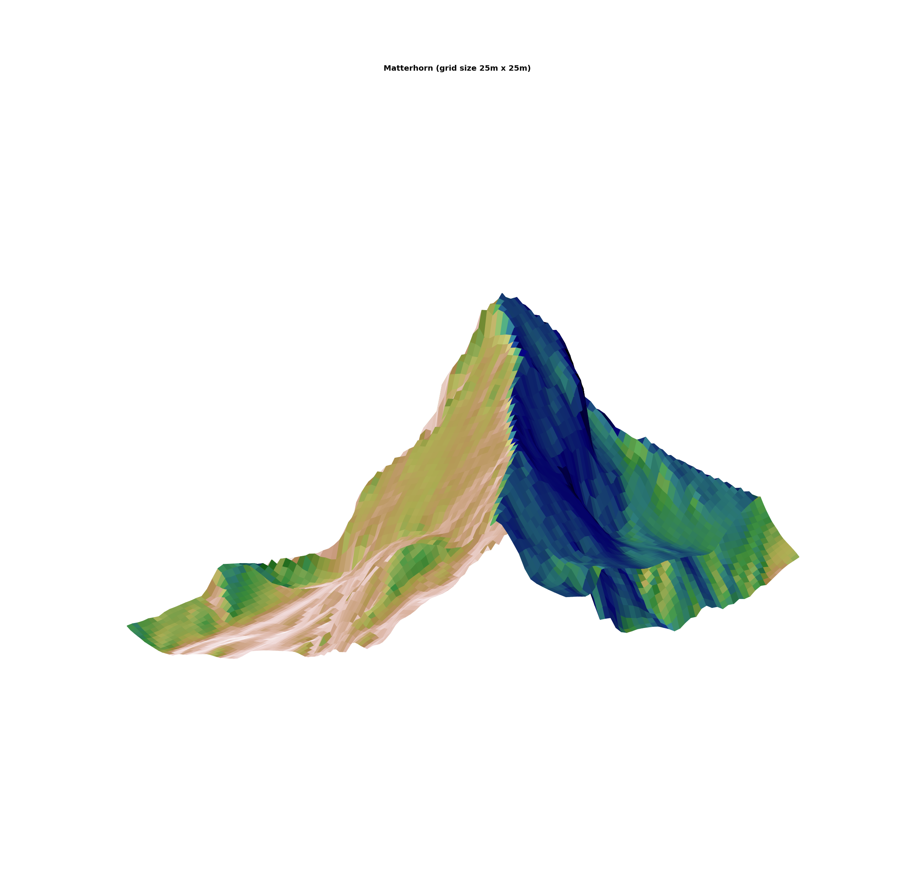

Title: How to climb the Matterhorn with a Markov Chain Monte Carlo walk Date: 2018-05-12 09:35 Category: MetaAnalysis Tags: numerical, statistics, python, bayesian Slug: Matterhorn-Markov-Chain-Monte-Carlo-walk-with-python Cover: /posts/img2108/output_6_1.png Authors: Peter Schuhmacher Summary: We let your robot climb the Matterhorn with a Markov Chain Monte Carlo walk
The information we have: a digital elevation model¶
The Swiss national agency SWISSTOPO provides for demo purposes a digital elevation model (DEM) of the Matterhorn ( https://shop.swisstopo.admin.ch/en/products/height_models/dhm25 , see ‘Sample data’). It’s a grid with 80 x 80 grid points. The grid size is 25 m. It covers an area of 2km x 2km with the peak of the Matterhorn in the center.
So the information we have is a table with figures indicating the height of topography at this piece of the earth:
pd.DataFrame(data=Zinput[33:38,33:48] )
| 0 | 1 | 2 | 3 | 4 | 5 | 6 | 7 | 8 | 9 | 10 | 11 | 12 | 13 | 14 | |
|---|---|---|---|---|---|---|---|---|---|---|---|---|---|---|---|
| 0 | 4277.008 | 4309.786 | 4341.514 | 4363.104 | 4370.490 | 4376.302 | 4372.981 | 4394.396 | 4414.586 | 4427.304 | 4434.690 | 4429.183 | 4400.208 | 4283.695 | 4238.506 |
| 1 | 4278.494 | 4299.690 | 4311.097 | 4326.480 | 4330.588 | 4326.087 | 4318.002 | 4320.187 | 4345.885 | 4364.590 | 4392.385 | 4389.282 | 4402.699 | 4325.082 | 4254.982 |
| 2 | 4246.285 | 4269.186 | 4277.401 | 4291.387 | 4292.304 | 4286.710 | 4274.080 | 4272.682 | 4268.005 | 4284.613 | 4306.595 | 4324.514 | 4330.414 | 4302.881 | 4264.597 |
| 3 | 4214.993 | 4238.681 | 4246.197 | 4260.488 | 4257.517 | 4256.293 | 4245.498 | 4232.780 | 4207.520 | 4223.690 | 4228.804 | 4228.017 | 4194.409 | 4223.603 | 4214.906 |
| 4 | 4179.200 | 4205.815 | 4215.518 | 4229.416 | 4222.204 | 4223.297 | 4218.402 | 4201.096 | 4148.695 | 4143.582 | 4141.484 | 4120.201 | 4107.308 | 4099.398 | 4115.087 |
The isoline representation gives some more insight. The north-east crest (running from the top right corner to the peak of Matterhorn) is the Hörnligrat. It is the most often used ascent to the Matterhorn.
Even in the given representation with a spatial resolution of 25 m, the four main crests are clearly identifiable. The width of the crest has a scale of 2.5m which is fairly sharper than the gridsize of 25m.
At the top there is nothing like a plateau as one might belive due to isoline plot. This photo gives a certain impression about the real world situation: https://upload.wikimedia.org/wikipedia/commons/8/88/Summit_of_the_Matterhorn.jpg
{kind=link}
plot_image_isoline(Z,Z)

The model: how to instruct your robot¶
The model rule¶
Imagine you want to instruct your robot to explore the ascent to the peak of the Matterhorn: what rule do you implement the robot ?
Even if it sounds simple and stupide: “Go as steeply upward as you can” is a not too bad rule. Once on a crest it’s the safest ascent that mountaineers usually prefer. And on the crest the rule is almost perfect: The steepest ascent is the way upward. The way back descends, and to the right und to the left too.
In the following we implement a simplified variant: We give the robot a reasonable starting point at the foot of the crest. There is a more general approach: We might let it rain and follow the traces of the runoff. There where is almost no water, there are the crests.
Why is a Markov Chain necessary ?¶
Because the famous crest always seen on any postcard, called Hörnli-Grat (Grat = crest), is not a random assembly of independent rocks ! Only some repeated and preferred transition probabilies from one point to the next gives something as a crest. Without that there is no crest, and the Hörnli-Grat would be Hörnli only (which is some sort of pasta in this region, usually called macaroni).
How can we use this feature for implementation ? We can consider the topographic height \(\mathbf{H}\) as velocity potential. The drift (given as velocity vector \(\mathbf{u}\)) toward the higher probability of being a crest is given as:
An other approach is that we identify the regions of higher probability being a crest as the areas where the drift \(\mathbf{u}\) is convergent. The convergence \(\gamma\) is given as:
For the latter approach we have mapped convergence \(\gamma\) (not shown here) which uses 2 grid length (= 50m) to compute. It seems that the grid size ist too coarse to give a good result.
What about Monte Carlo ?¶
We let your explorer robot explore the ascent over the crest several times. For that we add some random drift to the mean drift. The trace of the robot is then like a dog’s one looking for the trace of his master who is invisible hidden behind an obstacle: the running dog follows almost the master’s trace, but not always exactely.
There are some practical reasons for doing that, as (i) the starting point might not be ideal, so it’s better to adapt to a better trace. (ii) The crest may not always be a perfect crest. Our exploring robot had problems on the south-west crest, beceause the shoulder below the peak ressembles a plateau in the topographical data set, and the robot’s walk become stuck. With a good portion of Monte Carlo power the robot was able to overcome this passage.
What’s the result ?¶
The result is a 2-dimenaional PDF (probability density function) of the crests. So when you plan an expedition to the Matterhorn with 10 robots you may advise them to stay within the crest-PDF. For that you may implant them a Metropolis-Hasting chip in their GPS.
plot_trajectory(Xq,Yq,Zq,u,v,xts,yts)

Cp = C.copy(); Cp[C>150]=150;
plot_distribution(Xq,Yq,Zq,u,v,xts,yts,Xq,Yq,Cp)

Python code¶
import numpy as np
import pylab as pyl
import pandas as pd
import matplotlib.cm as cm
import matplotlib.pyplot as plt
from matplotlib.colors import LightSource
from mpl_toolkits.mplot3d import Axes3D
#--- read the imput file ------------------
f200name = 'matterhorn25.asc'
nHead = 6 #first 'nHead' rows to be skipped
with open(f200name,"r") as f200:
Zinput = np.loadtxt(f200,skiprows=nHead)
mx,my = Zinput.shape
#--- compute the grid -------
xZero = 615987.5
yZero = 90487.5
gridsize = 25
x = np.repeat(gridsize,mx); x[0] = 0.0; x = xZero + np.cumsum(x)
y = np.repeat(gridsize,my); y[0] = 0.0; y = yZero + np.cumsum(y)
X = np.outer(x,np.ones_like(y)) # X = ix.T * ones(iy)
Y = np.outer(np.ones_like(x),y) # Y = ones(ix) * iy.T
Z = Zinput
#--- unfortunately different systems have different matrix ordering......
Xmg,Ymg = np.meshgrid(x,y)
Xm = np.flipud(Xmg); Xn = Xmg; Xq = X
Ym = np.flipud(Ymg); Yn = Ymg; Yq = Y
Zm = Zinput; Zn = np.flipud(Zinput); Zq = np.fliplr(Zinput.T)
#---- evaluate the potential -----------
def scale(A):
return (A-np.min(A))/(np.max(A)-np.min(A))
def dH(H,nx,ny):
jx = slice(1,nx-1); jxm = slice(0,nx-2); jxp = slice(2,nx)
jy = slice(1,ny-1); jym = slice(0,ny-2); jyp = slice(2,ny)
Hx = np.zeros_like(H); Hy = np.zeros_like(H)
Hxx = np.zeros_like(H); Hyy = np.zeros_like(H)
Hx[jx,jy] = (H[jxp,jy] - H[jxm,jy])
Hy[jx,jy] = (H[jx,jyp] - H[jx,jym])
Hxx[jx,jy] = (H[jxp,jy] - 2.0*H[jx,jy] + H[jxm,jy])
Hyy[jx,jy] = (H[jx,jyp] - 2.0*H[jx,jy] + H[jx,jym])
return np.fliplr(Hx.T),np.fliplr(Hy.T), np.fliplr(Hxx.T), np.fliplr(Hyy.T),
Hx,Hy, Hxx, Hyy = dH(Z,mx,my)
#---- the trajectory model ------
def inField(jx,jy):
c = True
if jx< 0: c=False;
if jx>nx: c=False
if jy< 0: c=False;
if jy>ny: c=False
return c
def fem4(ξ,ν):
f1 = (1-ξ)*(1-ν); f2 = (ξ)*(1-ν)
f3 = (ξ)*(ν); f4 = (1-ξ)*(ν)
return f1,f2,f3,f4
def get_V(xp,yp,jx,jy,u,v):
ξ = (xp - x[jx])/(x[jx+1]-x[jx])
ν = (yp - y[jy])/(y[jy+1]-y[jy])
f1,f2,f3,f4 = fem4(ξ,ν)
up = f1*u[jx,jy] + f2*u[jx+1,jy] + f3*u[jx+1,jy+1] + f4*u[jx,jy+1]
vp = f1*v[jx,jy] + f2*v[jx+1,jy] + f3*v[jx+1,jy+1] + f4*v[jx,jy+1]
return up,vp
def get_cell(x,y,xp,yp, u,v, C):
jx = np.argmax(x>=xp)-1
jy = np.argmax(y>=yp)-1;
if inField(jx,jy):
up,vp = get_V(xp,yp,jx,jy,u,v)
C[jx,jy] += 1
return up,vp,True
else:
return [],[],False
def run_randomWalk(nTraj,dt,sigma):
def run_trajectories(xts,yts):
for iTraj in np.arange(nTraj):
xp = xstart; yp = ystart
xtr = np.array([xp])
ytr = np.array([yp])
runT = 0
while runT < runTmax:
runT += 1
up,vp,flag = get_cell(x,y,xp,yp,u,v, C)
if runT == runTmax: flag = False
if flag:
upp = np.random.normal(loc=0.0, scale=sigma)
vpp = np.random.normal(loc=0.0, scale=sigma)
xp = xp + (up+upp)*dt; xtr = np.append(xtr, xp)
yp = yp + (vp+vpp)*dt; ytr = np.append(ytr, yp)
else:
xts = pd.concat([xts,pd.DataFrame(xtr)], axis=1)
yts = pd.concat([yts,pd.DataFrame(ytr)], axis=1)
break
return xts,yts
xts = pd.DataFrame()
yts = pd.DataFrame()
C = np.zeros_like(X)
runTmax = 200
for xstart, ystart in zip(xStart,yStart):
xts,yts=run_trajectories(xts,yts)
return xts,yts,C
#------ main: Random Walk ----------
xStart = np.array([ 616750, 617900, 617950, 616250])
yStart = np.array([ 90600, 91250, 92400, 92400])
u = Hy
v = -Hx
x = Xq[:,0]
y = Yq[0,:]
nx = mx; ny = my
nTraj, dt, sigma = 500 ,0.45, 25.755
xts,yts,C = run_randomWalk(nTraj,dt,sigma)
Graphics¶
def plot_image_isoline(zImg,zIso):
fig = plt.subplots(figsize=(9, 9))
pyl.imshow(zImg,interpolation='bilinear',cmap=cm.rainbow,alpha=1.0)
CS = plt.contour(zIso,20)
plt.clabel(CS, inline=1, fontsize=10)
plt.title('Matterhorn (grid size 25m x 25m)', fontsize=20, fontweight='bold')
pyl.grid(True)
pyl.show()
def plot_trajectory(X,Y,Z,u,v,xts,yts):
R = (u*u + v*v)**(1/2)
with plt.style.context('fivethirtyeight'):
fig = plt.figure(figsize=(20,20))
ax1 = fig.add_subplot(111)
ax1.contour(X,Y,Z,20, alpha=0.6)
#q0 = ax1.quiver(X, Y, u, v, R, angles='xy', alpha=.92, cmap=plt.cm.plasma)
q1 = ax1.quiver(X, Y, u, v, edgecolor='k', facecolor='None', linewidth=.5)
#p = plt.quiverkey(q0,1,0.5,2,"2 m/s",coordinates='data',color='r')
ax1.plot(xts,yts,ls='-', color='r', lw=3, alpha=0.65)
plt.title('Some trajectories of Matterhorn Markov Chain Monte Carlo walk', fontsize=25, fontweight='bold')
ax1.set_aspect('equal')
def plot_distribution(X,Y,Z,u,v,xts,yts,xc,yc,C):
R = (u*u + v*v)**(1/2)
with plt.style.context('fivethirtyeight'):
fig = plt.figure(figsize=(20,32))
ax2 = fig.add_subplot(111)
#q0 = ax2.quiver(X, Y, u, v, R, angles='xy', alpha=.92, cmap=plt.cm.plasma)
q1 = ax2.quiver(X, Y, u, v, edgecolor='k', facecolor='None', linewidth=.5)
p = plt.quiverkey(q1,1,0.5,2,"2 m/s",coordinates='data',color='r')
ax2.contour(X,Y,Z,20, alpha=0.3)
ax2.contour(xc,yc, C , 20,alpha=0.95)
ax2.set_title('PDF of Matterhorn crests', fontsize=25, fontweight='bold')
ax2.set_aspect('equal')
def hillshade(array, azimuth, elevation):
rad = np.pi/180.
azimuth = (360.0 - azimuth)*rad
elevation = elevation*rad
hx, hy = np.gradient(array)
slope = np.pi/2. - np.arctan(np.sqrt(hx*hx + hy*hy))
aspect = 1. * np.arctan2(-hx, hy)
grey_shading = np.sin(elevation) * np.sin(slope)\
+ np.cos(elevation) * np.cos(slope)\
* np.cos((azimuth - np.pi/2.) - aspect)
shaded = np.maximum(0.0, grey_shading)
return grey_shading
def plotSurface(x,y,z,hShade):
fig, ax = plt.subplots(subplot_kw=dict(projection='3d'),figsize=(42,41))
ls = LightSource(270, 45)
rgb = ls.shade(hShade, cmap=cm.gist_earth, vert_exag=0.1, blend_mode='soft')
surf = ax.plot_surface(x, y, z, rstride=1,cstride=1,facecolors=rgb,
linewidth=3, antialiased=True, shade=False )
hight_angle = -5
rotation_angle = 120 # 0=von S; 90=von E; 180=von N
ax.view_init(hight_angle, rotation_angle)
xmin = np.min(X); xmax = np.max(X)
ymin = np.min(Y); ymax = np.max(Y)
zmin = np.min(Z); zmax = np.max(Z)
ax.set_xlim3d(xmin,xmax)
ax.set_ylim3d(ymin,ymax)
ax.set_zlim3d(zmin,1.1*zmax)
ax.set_axis_off()
'''
plt.xlabel(r'x (west --> east)', fontsize=40)
plt.ylabel(r'y (south --> north)',fontsize=40)
tickFontsize=40
plt.xticks(fontsize = tickFontsize, rotation=270);
plt.yticks(fontsize = tickFontsize, rotation= 90);
plt.tick_params(which='major', length=20, width=10)
'''
plt.title('Matterhorn', fontsize=40, fontweight='bold')
plt.show()
zShade = hillshade(Z,150, 45)
plotSurface(Xq,Yq,Z,zShade)
